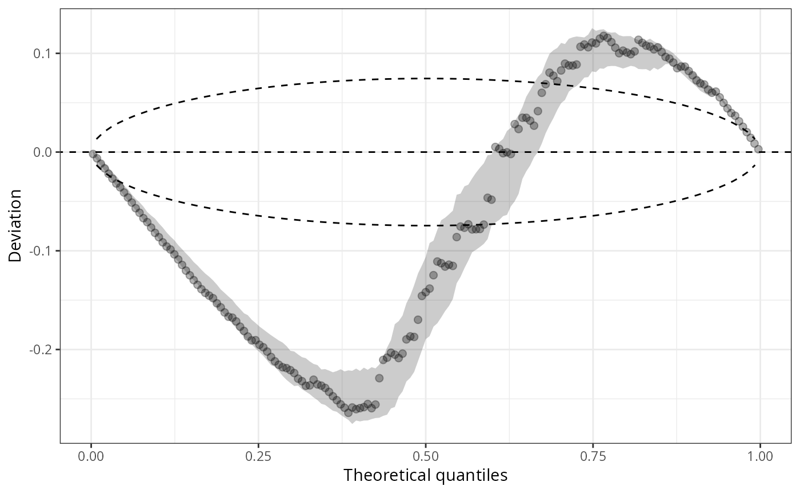
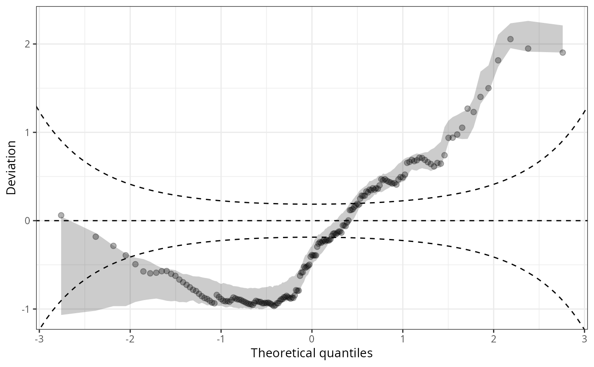
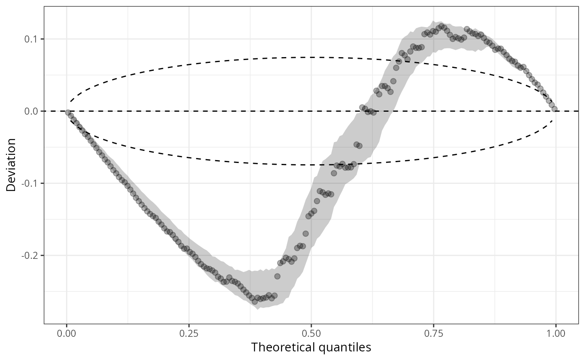
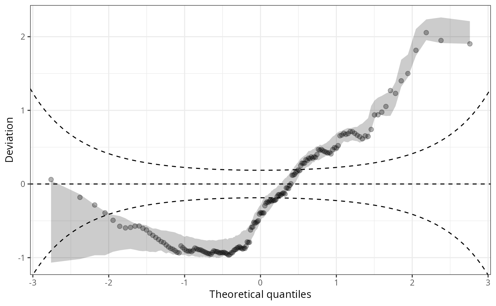

Q-Q Plots for Quantile Residuals
qqrplot.RdVisualize goodness of fit of regression models by Quantile-Quantile (Q-Q) plots using quantile
residuals. If plot = TRUE, the resulting object of class
"qqrplot" is plotted by plot.qqrplot or
autoplot.qqrplot before it is returned, depending on whether the
package ggplot2 is loaded.
qqrplot(object, ...)
# S3 method for default
qqrplot(
object,
newdata = NULL,
plot = TRUE,
class = NULL,
detrend = FALSE,
scale = c("normal", "uniform"),
nsim = 1L,
delta = NULL,
simint = TRUE,
simint_level = 0.95,
simint_nrep = 250,
confint = TRUE,
ref = TRUE,
xlab = "Theoretical quantiles",
ylab = if (!detrend) "Quantile residuals" else "Deviation",
main = NULL,
...
)Arguments
- object
an object from which probability integral transforms can be extracted using the generic function
procast.- newdata
an optional data frame in which to look for variables with which to predict. If omitted, the original observations are used.
- plot
logical or character. Should the
plotorautoplotmethod be called to draw the computed Q-Q plot? LogicalFALSEwill suppress plotting,TRUE(default) will choose the type of plot conditional if the packageggplot2is loaded. Alternatively"base"or"ggplot2"can be specified to explicitly choose the type of plot.- class
should the invisible return value be either a
data.frameor atibble. Either setclassexpicitly to"data.frame"vs."tibble", or forNULLit's chosen automatically conditional if the packagetibbleis loaded.- detrend
logical, defaults to
FALSE. Should the qqrplot be detrended, i.e, plotted as awormplot?- scale
character. On which scale should the quantile residuals be shown: on the probability scale (
"uniform") or on the normal scale ("normal").- nsim, delta
arguments passed to
qresiduals.- simint
logical. In case of discrete distributions, should the simulation (confidence) interval due to the randomization be visualized?
- simint_level
numeric. The confidence level required for calculating the simulation (confidence) interval due to the randomization.
- simint_nrep
numeric (positive; default
250). The number of repetitions of simulated quantiles for calculating the simulation (confidence) interval due to the randomization.- confint
logical or character describing the style for plotting confidence intervals.
TRUE(default) and"line"will add point-wise confidence intervals of the (randomized) quantile residuals as lines,"polygon"will draw a polygon instead, andFALSEsuppresses the drawing.- ref
logical, defaults to
TRUE. Should a reference line be plotted?- xlab, ylab, main, ...
graphical parameters passed to
plot.qqrplotorautoplot.qqrplot.
Value
An object of class "qqrplot" inheriting from
"data.frame" or "tibble" conditional on the argument class
with the following variables:
- observed
deviations between theoretical and empirical quantiles,
- expected
theoretical quantiles,
- simint_observed_lwr
lower bound of the simulated confidence interval,
- simint_observed_upr
upper bound of the simulated confidence interval,
- simint_expected
TODO: (ML) Description missing.
In case of nsim > 1, a set of nsim pairs of observed and
expected quantiles are returned (observed_1, expected_1, ...
observed_nsim, observed_nsim) is returned.
The "qqrplot" also contains additional attributes
xlab, ylab, main, simint_level, scale,
and detrended used to create the plot.
Details
Q-Q residuals plots draw quantile residuals (by default on the standard normal
scale) against theoretical quantiles from the same distribution.
Alternatively, quantile residuals can also be compared on the uniform scale
(scale = "uniform") using no transformation. For computation,
qqrplot leverages the function qresiduals employing
the procast generic.
Additional options are offered for models with discrete responses where randomization of quantiles is needed.
In addition to the plot and autoplot method for
qqrplot objects, it is also possible to combine two (or more) Q-Q residuals plots by
c/rbind, which creates a set of Q-Q residuals plots that can then be
plotted in one go.
References
Dunn KP, Smyth GK (1996). “Randomized Quantile Residuals.” Journal of Computational and Graphical Statistics, 5(3), 236--244. doi:10.2307/1390802
See also
Examples
## speed and stopping distances of cars
m1_lm <- lm(dist ~ speed, data = cars)
## compute and plot qqrplot
qqrplot(m1_lm)
 #-------------------------------------------------------------------------------
## determinants for male satellites to nesting horseshoe crabs
data("CrabSatellites", package = "countreg")
## linear poisson model
m1_pois <- glm(satellites ~ width + color, data = CrabSatellites, family = poisson)
m2_pois <- glm(satellites ~ color, data = CrabSatellites, family = poisson)
## compute and plot qqrplot as base graphic
q1 <- qqrplot(m1_pois, plot = FALSE)
q2 <- qqrplot(m2_pois, plot = FALSE)
## plot combined qqrplot as "ggplot2" graphic
ggplot2::autoplot(c(q1, q2), single_graph = TRUE, col = c(1, 2), fill = c(1, 2))
#-------------------------------------------------------------------------------
## determinants for male satellites to nesting horseshoe crabs
data("CrabSatellites", package = "countreg")
## linear poisson model
m1_pois <- glm(satellites ~ width + color, data = CrabSatellites, family = poisson)
m2_pois <- glm(satellites ~ color, data = CrabSatellites, family = poisson)
## compute and plot qqrplot as base graphic
q1 <- qqrplot(m1_pois, plot = FALSE)
q2 <- qqrplot(m2_pois, plot = FALSE)
## plot combined qqrplot as "ggplot2" graphic
ggplot2::autoplot(c(q1, q2), single_graph = TRUE, col = c(1, 2), fill = c(1, 2))
 ## Use different `scale`s with confidence intervals
qqrplot(m1_pois, scale = "uniform")
qqrplot(m1_pois, scale = "normal")
qqrplot(m1_pois, detrend = TRUE, scale = "uniform", confint = "line")

qqrplot(m1_pois, detrend = TRUE, scale = "normal", confint = "line")

## Use different `scale`s with confidence intervals
qqrplot(m1_pois, scale = "uniform")
qqrplot(m1_pois, scale = "normal")
qqrplot(m1_pois, detrend = TRUE, scale = "uniform", confint = "line")

qqrplot(m1_pois, detrend = TRUE, scale = "normal", confint = "line")
